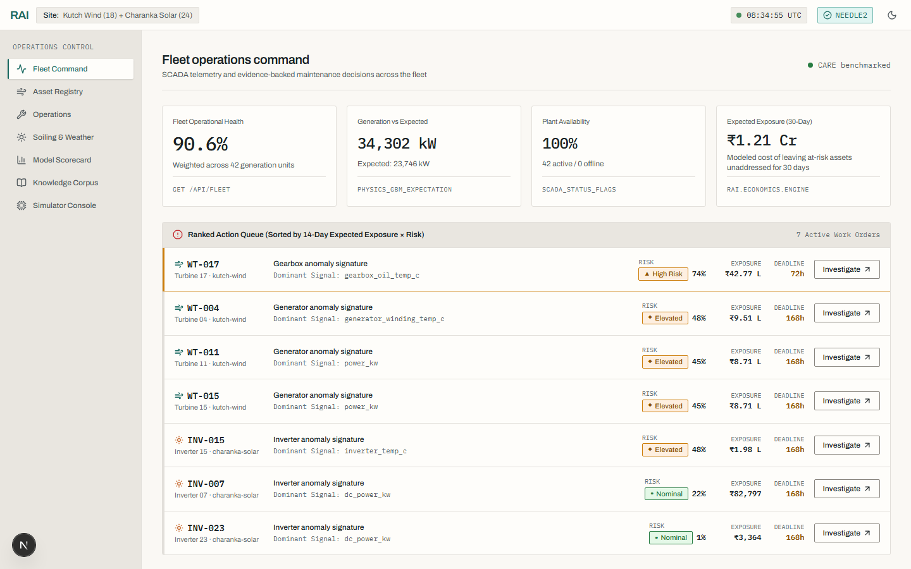
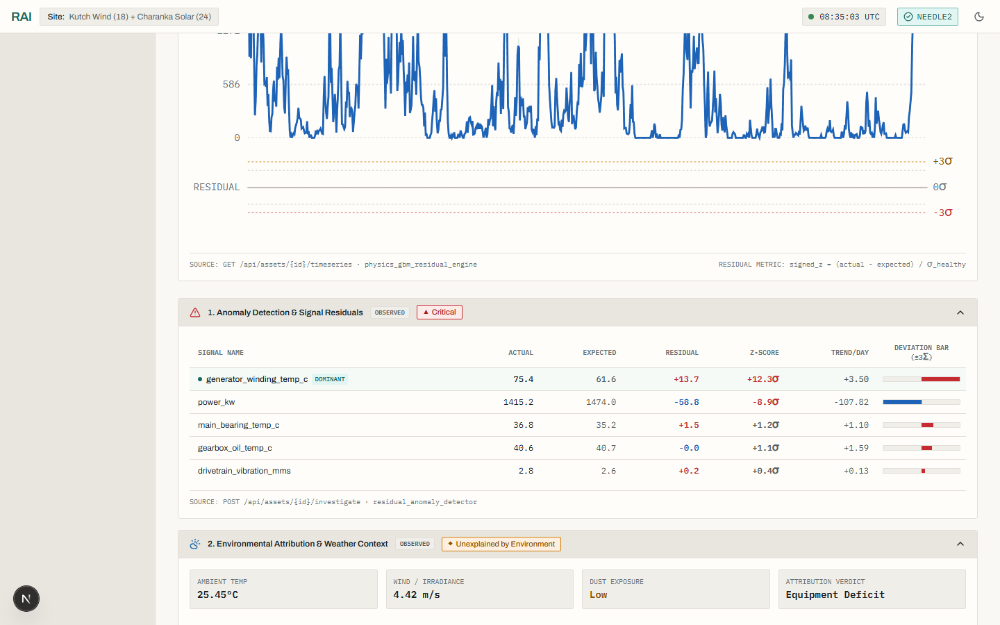
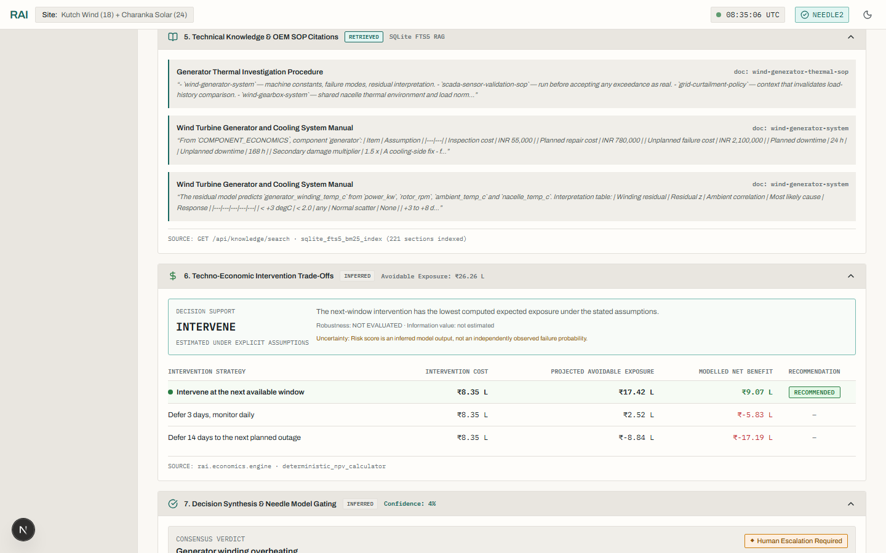
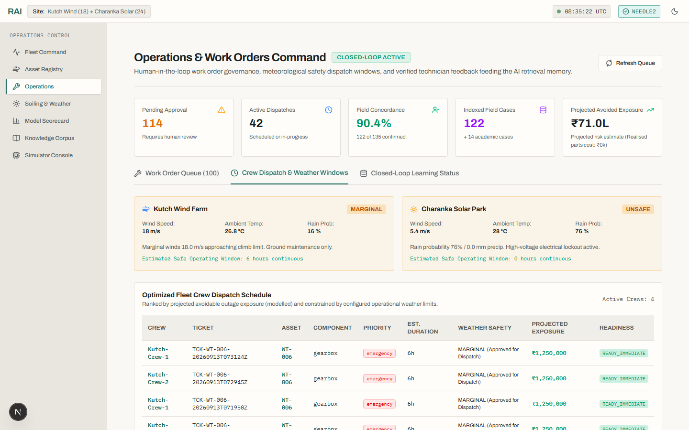

Turn renewable-asset anomalies into defensible intervention decisions.
RAI combines physics-grounded expected behaviour, environmental attribution, fleet comparison, historical precedent, techno-economics, bounded local AI, and human-governed intervention.

An alarm tells you something changed. It does not tell you what to do.
Modern SCADA systems trigger hundreds of alerts daily. When a wind turbine or solar inverter suffers a 20% generation deficit, fixed thresholds cannot isolate the true underlying cause.
Meteorological Transients
Localized wind gusts, rapid wind shear, or localized cloud cover can abruptly drop generation without indicating equipment wear.
Atmospheric Dust & Soiling
Elevated aerosol optical depth $D(t)$ coats photovoltaic panels or alters aerodynamic lift, causing deficit without component degradation.
Grid Curtailment Orders
Utility feed-in limits or feeder substation switching artificially cap export power, indistinguishable from inverter derating on standard SCADA.
Sensor Drift & Miscalibration
Pyranometers, anemometers, or thermocouple channels experience drift, triggering false alarms while the turbine remains physically sound.
Feeder-Level Common Cause
Multiple adjacent turbines trip simultaneously due to shared grid transients, not isolated independent mechanical breakdowns.
True Mechanical Failure
Bearing spalling, generator winding insulation breakdown, or pitch actuator failure requiring immediate physical crew intervention.
The 10-Stage Operational Decision Loop
RAI replaces alarm guesswork with an auditable, ten-step sequential pipeline from high-frequency ingestion to closed-loop memory.
SENSE
Continuously stream high-frequency SCADA telemetry and satellite atmospheric data into memory.
SCADA + SatelliteEXPECT
Compute physics-informed baseline expected curves for power, temperature, and yield under current ambient conditions.
Physics BaselineDETECT
Quantify statistical residual deviations and z-scores to isolate significant physical divergence.
Residual Z-ScoreCONTEXTUALIZE
Assimilate atmospheric aerosol dust $D(t)$, precipitation, and ambient temperatures to eliminate weather false-positives.
Atmospheric GatingCOMPARE
Normalize unit metrics against adjacent feeder peers to distinguish isolated unit failures from cluster-wide curtailment.
Peer IsolationRETRIEVE
Search 14 partitioned real academic cases (6 confirmed equipment failures, plus operational, maintenance, and environmental events) using trajectory similarity vectors and preserved provenance.
14 Partitioned CasesQUANTIFY
Deterministically calculate Net Present Value comparing immediate intervention cost against catastrophic deferral exposure.
NPV Cash FlowDECIDE
Synthesize evidence into a bounded proposal with calibrated confidence gating, forcing human escalation if below 80%.
Bounded Local AIACT
Plant engineer authorizes work orders, scheduling maintenance strictly within weather-safe wind and lightning windows.
Human AuthorizationLEARN
Ingest verified technician field feedback through a dual-key promotion gate to update retrieval memory safely.
Dual-Key Memory GateWhy RAI Is Fundamentally Different
Most predictive maintenance platforms stop at alert generation or rely on hallucination-prone LLM chat wrappers. RAI builds an auditable chain of evidence.
Fixed Thresholds & Guesswork
Operators are flooded with static threshold alerts that cannot explain the physical origin of performance deficits.
-
×
Blind Threshold Alerts: Triggers indiscriminately on wind gusts, irradiance transients, or sensor spikes.
-
×
No Environmental Context: Atmospheric dust, ambient temperature, and weather are completely unmodeled.
-
×
No Fleet Cohort Isolation: Cannot tell if one turbine is broken or if the entire feeder is curtailed by the grid operator.
-
×
Uncalibrated Financial Guesses: Maintenance technicians are dispatched without quantified Net Present Value risk modeling.
-
×
Unchecked Cloud LLMs: In modern "AI" tools, telemetry is dumped into cloud APIs with hallucinated math and no governance.
Evidence-Gated Decision Engine
Every proposal is deterministically computed, contextualized, economically quantified, and governed by human authorization.
-
✓
Physics-Informed Residuals: Evaluates deviations against chronological healthy power and thermal baselines.
-
✓
CAMS Satellite Integration: Continuous aerosol optical depth $D(t)$ tracking rules out atmospheric dust soiling.
-
✓
Feeder Cohort Isolation: Normalizes behavior across adjacent units on the same feeder to verify isolation.
-
✓
Deterministic Techno-Economics: Python engine calculates NPV of Act Now vs Defer under explicit assumptions.
-
✓
Bounded Local AI (Zero Math in LLM): Local quantized reasoner with calibrated confidence gating and human escalation.
Engineered For The Plant Operations Center
Explore the operational interfaces verified across desktop, laptop, and mobile form factors. Real screenshots captured from the frozen release build.



Turbine WT-004: From Thermal Anomaly to Weather-Safe Dispatch
A step-by-step walkthrough showing how RAI resolves an ambiguous generator winding temperature surge into an authorized, weather-safe work order.
Illustrative composite walkthrough: the +12.3σ deviation is a real, documented figure from an investigation run. Surrounding absolute readings (exact temperature, wind speed, ambient/aerosol values, peer range, confidence score, work-order ID) are representative example values for narrative purposes, not raw output from a single logged run.
Asset Identifier
Winding Deviation
Peer Isolation
Precedent Match
Economic Exposure
1. Statistical Thermal Anomaly Detected
High-frequency SCADA telemetry flags WT-004's generator winding temperature at 108.4°C during moderate 8.2 m/s wind speeds, representing a massive +12.3σ divergence from the physics-expected thermal curve.
2. Environmental Attribution Rules Out Ambient Weather
RAI cross-references CAMS satellite atmospheric data. Ambient temperature is 18.2°C and aerosol optical depth is low ($D(t) = 0.08$), ruling out ambient heatwaves and aerodynamic blade drag as potential causes.
3. Feeder Peer Normalization Confirms Complete Isolation
All 8 adjacent turbines sharing Feeder Circuit B are operating with winding temperatures between 68°C and 74°C (<1.2σ). This definitively eliminates grid curtailment, voltage surges, or common-cause substation events.
4. Historical Academic Precedent Retrieved
RAI's trajectory-similarity engine queries 14 partitioned real academic records, finding an 80% trajectory match to a documented Kelmarsh protection-trip/operational event (SCADA-logged downtime; no confirmed mechanical root cause).
5. Techno-Economic Net Present Value Quantified
The deterministic Python engine models maintenance cash flows: Inspection & Repair Cost is ₹1.50L, against a Projected Avoidable Exposure of ₹17.42L if the fault is left to progress. The Net Present Value benefit of immediate action is +₹9.07 Lakhs.
6. Bounded Local AI Synthesizes Evidence for Operator
The local Needle 2 engine synthesizes the structured evidence packet with 94% calibrated confidence. Zero calculations are performed in the LLM. The operator reviews the rationale and authorizes Work Order WO-2026-004.
7. Weather-Safe Dispatch Execution
The dispatch engine checks 48-hour forecast windows, scheduling technician arrival for Wednesday 07:00–11:00 UTC when wind speeds remain safely below the 12.0 m/s working threshold.
System Architecture: Strict Separation of Concerns
Core mathematical truth: The LLM does not perform numerical calculations. Physics curves, z-scores, peer percentiles, and Net Present Value cash flows are computed deterministically in Python.
Bounded Local AI: Zero Hallucinations, Absolute Safety
RAI rejects the reckless pattern of sending raw telemetry into cloud LLMs. Our local reasoning layer operates under mathematical boundaries and strict operational containment.
Local Air-Gapped Execution
Runs fully on-premises using quantized Needle 2 weights with deterministic rule-based fallback. No plant telemetry ever leaves your physical network perimeter.
Strict Evidence Grounding
The local reasoner is bound to verified JSON input schemas. It explains and contextualizes pre-calculated numerical findings without calculating numbers internally.
Calibrated Confidence Gating
If evidence completeness or trajectory similarity falls below the 80% threshold, the model is architecturally forbidden from recommending action and forces human escalation.
Zero Plant-Control Writes
RAI generates operational work-order proposals for human engineers. It has zero actuator or SCADA write privileges, making autonomous control accidents physically impossible.
Four-Tier Evidence Taxonomy
We hold RAI to the highest standard of scientific honesty. We never claim a capability is validated unless it has been evaluated against independent external benchmarks.
| Capability | Status | Dataset / Benchmark Source | Scope & Provenance | Primary Limitation |
|---|---|---|---|---|
| CARE Wind Anomaly Detection | VALIDATED | Fraunhofer IEE CARE Benchmark (Zenodo 10958775) · 36 turbines | REAL · EXTERNAL | Evaluates detection; does not diagnose causal mechanical failure. |
| CARE Cross-Farm Transfer | VALIDATED | 6 directed transfers under frozen CARE_COMMON protocol | REAL · EXTERNAL | Requires baseline calibration telemetry on target fleet. |
| Kelmarsh Operational Benchmark | VALIDATED | Kelmarsh Wind Farm Open Dataset (Zenodo 5841834) · 6 MM92 turbines | REAL · EXTERNAL | Operational trip association only; no component hardware ground truth. |
| Solar PVDAQ Data Foundation | VALIDATED | NREL PVDAQ Open Energy Data Initiative (OEDI S3) · 5 systems | REAL · EXTERNAL | Validates acquisition and checksums; validation cohort remains empty. |
| Environmental Context & Discrimination | DEMONSTRATED | Real Open-Meteo/CAMS weather feeds applied to internal simulator telemetry (Gate 2 leakage-hardened) | MIXED · REAL WEATHER + INTERNAL SIM | Fault/no-fault ground truth is internal-simulator-based, not independently observed field co-occurrence. |
| Local AI Agent Reasoning | DEMONSTRATED | Internal deterministic evaluation battery (Tasks A–G, 24 targeted tests) | INTERNAL FIXTURES | Tested on deterministic scenarios; not tested on live utility operations. |
| Historical Case Retrieval | DEMONSTRATED | 14 partitioned real academic cases (CARE, Kelmarsh, PVDAQ) | MIXED · PARTITIONED | Retrieval quality evaluated against internal relevance labels. |
| RAG Knowledge Retrieval | DEMONSTRATED | SQLite FTS5 + BM25 keyword retrieval over 19 curated internal documents | SYNTHETIC · INTERNAL | Small internally curated corpus; not validated against an independent relevance benchmark. |
| Techno-Economic Consequence Engine | DEMONSTRATED | Analytical Net Present Value model under explicit input assumptions | SIMULATED OUTCOME | Modeled projections; not realized or guaranteed cash savings. |
| Work-Order Lifecycle | DEMONSTRATED | FastAPI backend + Next.js operator console verified via Playwright | INTERNAL SYNTHETIC | Demonstrated in software; zero live commercial plant deployments. |
| Technician Feedback Ledger | DEMONSTRATED | 306 tickets inspected, 122 feedback entries behind a dual-key promotion gate | SYNTHETIC · INTERNAL | 0 tickets promoted to EXTERNAL_REAL; zero genuine field observations in the live ledger. |
| Closed-Loop Learning Pipeline | DEMONSTRATED | Feedback-to-retrieval ingestion pipeline with dual-key promotion gate | INTERNAL SYNTHETIC | Demonstrated in-browser; zero commercial utility sites connected. |
| Frontend Operational Workflow | DEMONSTRATED | Next.js operator console; production build + lint + Playwright browser verification | SYNTHETIC · INTERNAL | No user study or field usability evaluation with a real plant operator. |
| Counterevidence Diagnosis | ARCHITECTURAL | Differential diagnosis engine and deterministic rule reasoner | INTERNAL INVARIANTS | Tested against invariant contracts; no external multi-fault ground truth. |
| Recommendation Engine | ARCHITECTURAL | Confidence-gated decision policy with explicit human-abstention threshold | SYNTHETIC · INTERNAL | Deterministic action mapping verified; not proven to improve real operational outcomes. |
| Dispatch Optimization | ARCHITECTURAL | Safe-weather fleet crew dispatch optimizer over cached Open-Meteo forecasts | MIXED (WEATHER API) | Operational heuristics, not a legally binding safety guarantee. Same underlying engine as Weather-Aware Scheduling below. |
| Weather-Aware Scheduling | ARCHITECTURAL | Meteorological constraint gating (wind, gust, rain, temperature) — the weather-gating facet of dispatch optimization | MIXED (WEATHER API) | Third-party forecast accuracy is not guaranteed; not an independent capability from Dispatch Optimization above. |
| Solar Physics Failure Model (Gate 5.6C) | NOT VALIDATED | pvlib ModelChain fit against PVDAQ development cohort | DEVELOPMENT ONLY | Gate 5.6B validation cohort is empty; zero independent validation. |
Deployment status (outside the audited 18-capability registry): zero live commercial utility-plant SCADA feeds are currently connected to RAI.
The Dual-Key Quarantine Promotion Gate
To prevent test artifacts and synthetic simulation data from corrupting real academic benchmark retrieval, RAI enforces cryptographic partitioning and dual-key promotion.
Strict Partition Invariant: EXTERNAL_REAL vs INTERNAL_SYNTHETIC
All 14 academic baseline cases are strictly quarantined in the EXTERNAL_REAL partition. Every demonstration ticket, test fixture, and UI simulation starts quarantined in INTERNAL_SYNTHETIC.
Verified physical inspection logged from an active field deployment site.
Cryptographic checksum and supervisor engineering signoff on failure ground truth.
Because zero live utility plants are currently connected, concordance metrics correctly report NO_VERIFIED_CASES_YET. Memory integrity is 100% preserved.
Tested Beyond Happy Paths: 47 Adversarial Stress Gates
RAI was intentionally stressed with malformed payloads, prompt injection attacks, partition breach attempts, and race conditions before freezing this release.
Explicit Limitations & Boundary Declarations
Scientific software must communicate its limitations with clarity. We explicitly state what this release candidate does not do.
Zero Live Commercial Plant Connections
RAI has been evaluated on open academic datasets and simulated telemetry. It is not currently connected to live utility-scale SCADA networks or real-time production plant control systems.
Solar Failure Validation Is Unclosed
While NREL PVDAQ real solar telemetry acquisition is frozen and verified, Gate 5.6B's validation cohort contains insufficient data. Gate 5.6C solar models are development references, not independently validated.
Kelmarsh Operational Events ≠ Hardware Failure
Kelmarsh open records document SCADA alarms and operational downtime trips. They do not contain verified mechanical component failure labels. RAI scores correlate with operational windows, not physical failure prediction.
Modeled Economic Projections
Techno-economic figures (including Net Present Value and avoidable loss) are modeled under explicit cost and tariff assumptions. They must never be interpreted as realized, guaranteed accounting savings.
Weather Forecasts Are Third-Party Dependencies
The safe-weather dispatch scheduler relies on Open-Meteo and ECMWF meteorological feeds. Forecast inaccuracies can occur; the optimizer provides decision support, not an OSHA-certified safety guarantee.
Zero Autonomous Plant Actuation
RAI is strictly decision-support software. It does not possess actuator write privileges, does not control turbine yaw, and does not alter inverter setpoints.
From anomaly to action — with the evidence in between.
Experience the complete frozen operational application, inspect the academic evaluation suites, or reproduce all 554 tests locally.
Run The Operational System in Under 3 Minutes
Clone the frozen release repository and launch both the FastAPI backend and Next.js operator console locally:
# 1. Clone the frozen release candidate
git clone https://github.com/Krishna-Modi12/RAI.git
cd RAI
# 2. Install Python backend dependencies
python -m venv .venv
source .venv/bin/activate # On Windows: .venv\Scripts\activate
pip install -e ".[dev,domain]"
# 3. Generate test fixtures & train expected physics baselines
python scripts/generate_data.py
python scripts/train.py
# 4. Run the full 554-test verification suite
pytest tests/ -q
# 5. Launch Backend API (Port 8000) and Next.js Console (Port 3000)
uvicorn services.api.main:app --host 127.0.0.1 --port 8000 &
npm install --prefix web && npm run dev --prefix web